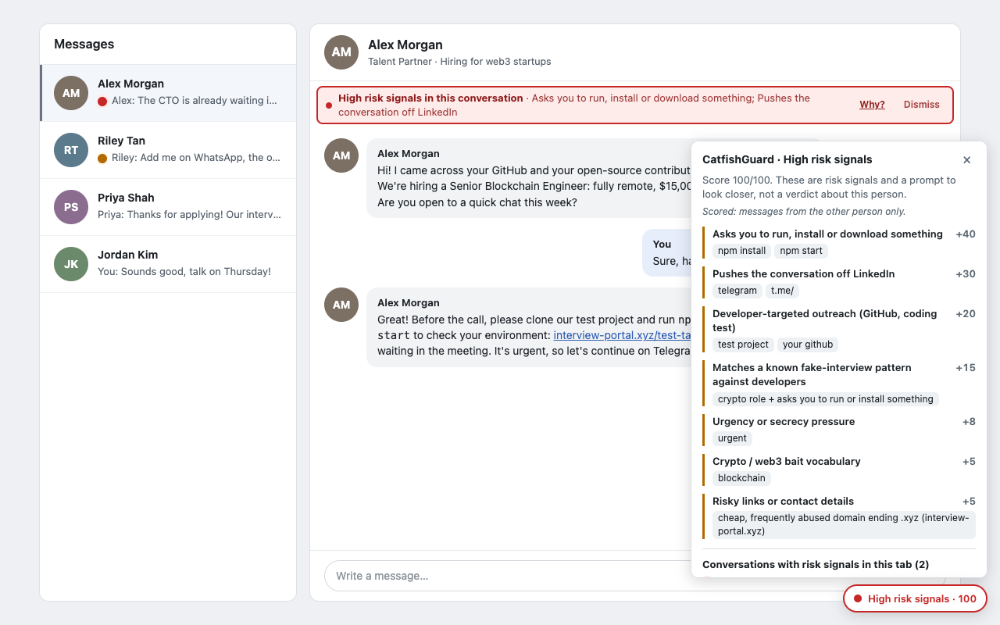
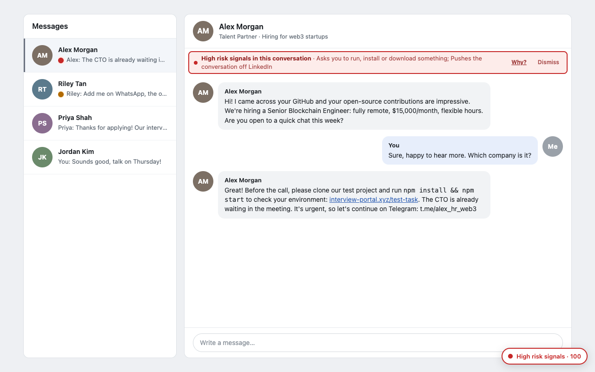
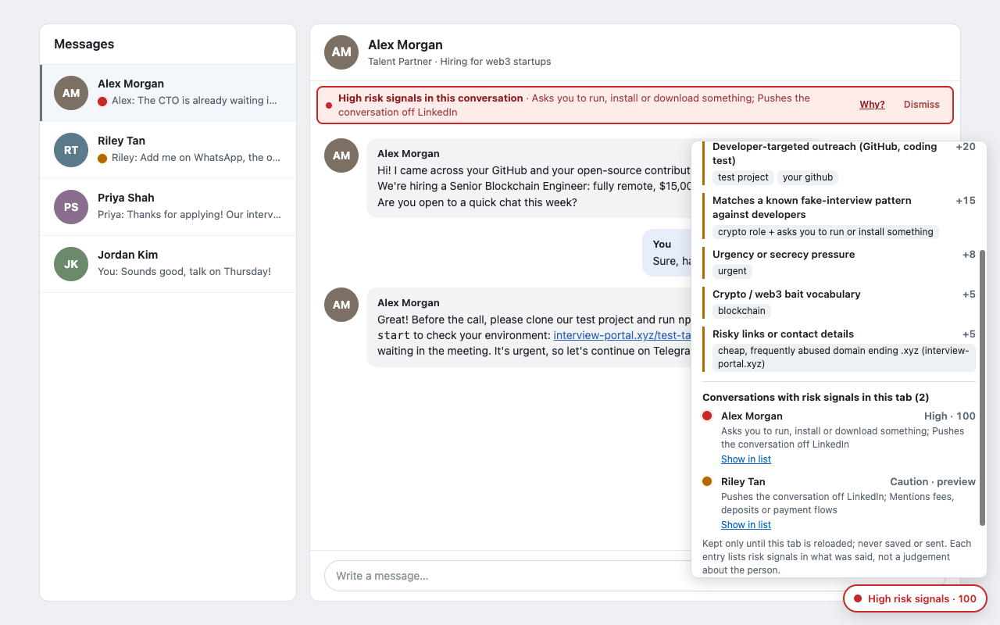

CatfishGuard reads the LinkedIn message, profile or job post in front of you, flags recruiter-scam and phishing risk signals, and shows exactly why. All of it runs inside your browser.

Fake recruiters target developers with a script that barely changes. Every step leaves a signal, and CatfishGuard puts those signals in front of you while you're still reading.
I came across your GitHub. Your contributions are impressive.Developer-targeted outreach
Senior blockchain engineer, fully remote, flexible hours.Crypto / web3 bait
Book a slot on my calendar. The CTO is already waiting in the meeting.Urgency · brand without its domain
Clone our test project and run npm install. Let's continue on Telegram.Asks you to run code · moves off-platform
A number alone isn't useful. Every flag comes with the phrases, links and patterns that triggered it, so you can decide for yourself in seconds.
Low, caution or high, with the matching phrases and links listed underneath.
Lookalike and typo domains, a “recruiter” for a company who never links to its real site, IP links, shorteners, executable downloads.
A slim banner above risky conversations, coloured dots in your inbox, and it works in the chat windows on the feed too.
One click to reverse image search the other person's profile photo. Nothing is sent unless you click.
Match against a public list of scam domains, handles and wallets, such as MetaMask's eth-phishing-detect.
Tune weights, add your own phrases, brands and trusted domains. English and Chinese built in.


Screenshots use a fictional demo conversation. People and companies shown are made up.
CatfishGuard is built so there's nothing to leak. The analysis happens on your device, and nothing about you or the pages you read is ever sent anywhere. This website doesn't track you either: no analytics, no third-party fonts or scripts.
The Chrome Web Store listing is on its way. Until then, you can load it straight from the source in a minute.
Grab the source from GitHub (Code → Download ZIP) and unzip it.
Open chrome://extensions and switch on
Developer mode (top right).
Click Load unpacked, pick the folder, then open LinkedIn. Look for the badge in the bottom-right corner.
It reads the text and links of the LinkedIn page you're viewing, inside your browser, to score them. Only messages from the other person are scored, never your own replies or drafts.
No. There's no server. The only optional request is downloading a public blocklist from GitHub if you set one, and that request carries nothing about you or the page.
Because it can't know who someone is, only what was said and linked. It shows you the evidence and leaves the call to you.
Sometimes it's expected: a genuine fintech recruiter may say “blockchain”. Check the reasons; if they don't hold up, dismiss the banner. You can also mute phrases or add trusted domains in the settings.
No. It only runs on linkedin.com, by design. That keeps its permissions small.